Electron transport excercise 2
This script runs a multi-stream electron transport calculation for electron-precipitation with a range of energy and field-aligned and isotropic pitch-angle distributions. The code is set-up such that it should run automatically. However, it might be easier to understand what is going on if you run the script interactively, you do this by opening the script in the matlab editor (at the command-line prompt type: edit Electron_transport_excercise_1) Then you can run the script by pushing the "run and advance" icon/button. to run the current section and then advance to the next. The actual electron transport step takes a fair bit of time (~30-40 minutes)
Contents
Set-up stuff
Here we set variables for the running of this script You should not need to change these
Science_grade_not_demo = 1; % To run with an OK energy-grid plot_figs = 1; % To plot intermediate figures during % set-up, to disable set to zero print_figs = 0; % To print the intermediate figures % during set-up, change to one if Science_grade_not_demo n_dirs = 1 + 180*4; stepE = 1; else % Then demo with coarser energy-grid n_dirs = 1 + 180*4; stepE = 30; end
Set-up 2
the setup4etrpd10streamsB script prepares thermospheric densities and temperatures (for the electron collisions), magnetic field-strength (for the magnetic mirroring), the energy-grid and collision-cross-sections (elastic, inelastic and ionization), the phase-functions, and specifies the pitch-angle discretization and calculates the probabillities for scattering between different pitch-angle streams. * Look at the plots and judge whether they are sensible - i.e. for example no obvious errors in units etc.
if ~exist('setup_completed','var') || setup_completed ~= 1 setup4etrptd10streamsB end
Specification of energy and pitch-angle distribution
for electron precipitation. Here the first element in each row is the magnetic field-strength, if we set it to an array of ones there will be no magnetic mirror-force, the second element describes which pitch-angle-streams will have the precipitation. the third element describes the energy and width of the Gaussian precipitation, the last element is a file-name for saving the results to for each case.
par_list4Ie = { B, 1, [5e2 100], 'G_Beam1-0.5keV';
B, 1, [1e3 100], 'G_Beam1-1.0keV';
B, 1, [2e3 100], 'G_Beam1-2.0keV';
B, 1, [4e3 100], 'G_Beam1-4.0keV';
B, 1, [6e3 100], 'G_Beam1-6.0keV';
B, 1:5, [5e2 100], 'G_IS015-0.5keV';
B, 1:5, [1e3 100], 'G_ISO15-1.0keV';
B, 1:5, [2e3 100], 'G_ISO15-2.0keV';
B, 1:5, [4e3 100], 'G_ISO15-4.0keV';
B, 1:5, [6e3 100], 'G_ISO15-6.0keV'};
Electron transport calculations, case-by-case
Here we loop over the 12 different cases
for i_pars = 1:size(par_list4Ie,1) %Run_section(1) disp('===========================================================================') disp(par_list4Ie(i_pars,:)) disp('---------------------------------------------------------------------------') B_curr = par_list4Ie{i_pars,1}; % Magnetic field; idx_BW = par_list4Ie{i_pars,2}; % pitch-angle-stream-index(es) E0dE = par_list4Ie{i_pars,3}; % Peak energy and width of Gaussian savedir = par_list4Ie{i_pars,4}; % Directory for saving results to fprintf('E0dE: %f, %f eV\n',E0dE(1),E0dE(2)) fprintf('savedir: %s\n',savedir) curr_par = par_list4Ie(i_pars,:); % Find a suitable energy-range iEmax = find( cumsum(exp(-(E-E0dE(1)).^2/E0dE(2)^2)) < ... 0.9999*sum(exp(-(E-E0dE(1)).^2/E0dE(2)^2)),1,'last'); [SUCCESS,MESSAGE,MESSAGEID] = mkdir(savedir); % Here we save away the back-ground parameters for each case save(fullfile(savedir,'neutral_atm.mat'),'Te','h_atm','nN2','nO','nO2','ne') save(fullfile(savedir,'curr_par.mat'),'curr_par') fprintf('%d: %s\n',i_pars,datestr(now,'HH:MM:SS')) % No photo-electron-production for this excercise - so we set % that parameter to zero at all altitudes and energies p_e_q = zeros(length(h_atm),length(E(1:iEmax))); % Specification of energy-distribution of the electron precipitation for iBeam = numel(c_o_mu):-1:1 Ie_oftGB{iBeam} = @(E) zeros(size(E)); end i_Hots = idx_BW; for i_curr_Beam = i_Hots disp(i_curr_Beam) Ie_oftGB{i_curr_Beam} = @(Ei) 1e12/(E0dE(1,1))*exp(-(Ei-E0dE(1,1)).^2/E0dE(1,2))*B_W(i_curr_Beam)/sum(B_W(i_Hots)); end % Here is where the electron-transport takes place: [Ie_zE] = Ie_M_stream_4_auroraB(h_atm,mag_ze,B_curr,E(1:iEmax),mu_lims,mu_scatterings,Ie_oftGB,p_e_q,ne,Te,... nO,O_levels,XsO(:,1:iEmax),@O_e_2nd_dist,@phase_fcn_O,... nN2,N2_levels,XsN2(:,1:iEmax),@N2_e_2nd_dist,@phase_fcn_N2,... nO2,O2_levels,XsO2(:,1:iEmax),@O2_e_2nd_dist,@phase_fcn_O2); savefile = fullfile(savedir,sprintf('IeSteady_1.mat')); save(savefile,'Ie_zE','E','mu_lims','h_atm','Ie_oftGB','mu_scatterings','curr_par','-v7.3') Ie_zE_all{i_pars} = Ie_zE; end
===========================================================================
{515x1 double} {[1]} {1x2 double} {'G_Beam1-0.5keV'}
---------------------------------------------------------------------------
E0dE: 500.000000, 100.000000 eV
savedir: G_Beam1-0.5keV
1: 18:48:22
1
===========================================================================
{515x1 double} {[1]} {1x2 double} {'G_Beam1-1.0keV'}
---------------------------------------------------------------------------
E0dE: 1000.000000, 100.000000 eV
savedir: G_Beam1-1.0keV
2: 18:50:06
1
===========================================================================
{515x1 double} {[1]} {1x2 double} {'G_Beam1-2.0keV'}
---------------------------------------------------------------------------
E0dE: 2000.000000, 100.000000 eV
savedir: G_Beam1-2.0keV
3: 18:52:39
1
===========================================================================
{515x1 double} {[1]} {1x2 double} {'G_Beam1-4.0keV'}
---------------------------------------------------------------------------
E0dE: 4000.000000, 100.000000 eV
savedir: G_Beam1-4.0keV
4: 18:56:36
1
===========================================================================
{515x1 double} {[1]} {1x2 double} {'G_Beam1-6.0keV'}
---------------------------------------------------------------------------
E0dE: 6000.000000, 100.000000 eV
savedir: G_Beam1-6.0keV
5: 19:02:34
1
===========================================================================
{515x1 double} {1x5 double} {1x2 double} {'G_IS015-0.5keV'}
---------------------------------------------------------------------------
E0dE: 500.000000, 100.000000 eV
savedir: G_IS015-0.5keV
6: 19:10:42
1
2
3
4
5
===========================================================================
{515x1 double} {1x5 double} {1x2 double} {'G_ISO15-1.0keV'}
---------------------------------------------------------------------------
E0dE: 1000.000000, 100.000000 eV
savedir: G_ISO15-1.0keV
7: 19:12:19
1
2
3
4
5
===========================================================================
{515x1 double} {1x5 double} {1x2 double} {'G_ISO15-2.0keV'}
---------------------------------------------------------------------------
E0dE: 2000.000000, 100.000000 eV
savedir: G_ISO15-2.0keV
8: 19:14:27
1
2
3
4
5
===========================================================================
{515x1 double} {1x5 double} {1x2 double} {'G_ISO15-4.0keV'}
---------------------------------------------------------------------------
E0dE: 4000.000000, 100.000000 eV
savedir: G_ISO15-4.0keV
9: 19:17:41
1
2
3
4
5
===========================================================================
{515x1 double} {1x5 double} {1x2 double} {'G_ISO15-6.0keV'}
---------------------------------------------------------------------------
E0dE: 6000.000000, 100.000000 eV
savedir: G_ISO15-6.0keV
10: 19:23:12
1
2
3
4
5
Results and analysis 1 electron-fluxes
1, electron fluxes as functions of altitude and energy
pitch-angle-stream by pitch-angle-stream * Study differences between the electron-fluxes for the different primary electron energies in the two pitch-angle-distributions.
fignames = {'0.5 keV, field-aligned',...
'1.0 keV, field-aligned',...
'2.0 keV, field-aligned',...
'4.0 keV, field-aligned',...
'6.0 keV, field-aligned',...
'0.5 keV, isotrpoic',...
'1.0 keV, isotropic',...
'2.0 keV, isotropic',...
'4.0 keV, isotropic',...
'6.0 keV, isotropic'};
for i1 = 1:10
figure('name',fignames{i1},'position',[104 534 1186 435])
plot_IezE_3DEz(h_atm,E(1:size(Ie_zE_all{i1},2)),Ie_zE_all{i1},dE(1:size(Ie_zE_all{i1},2)),BeamW,[6 12],spp, theta_str);
end
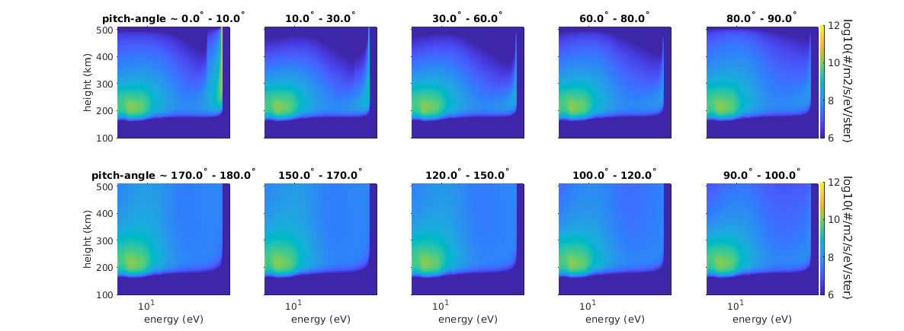 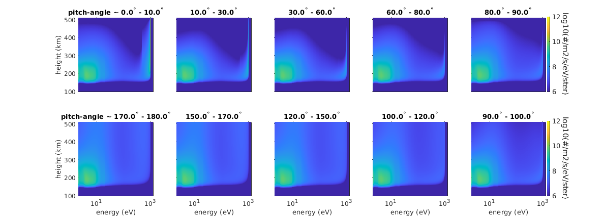 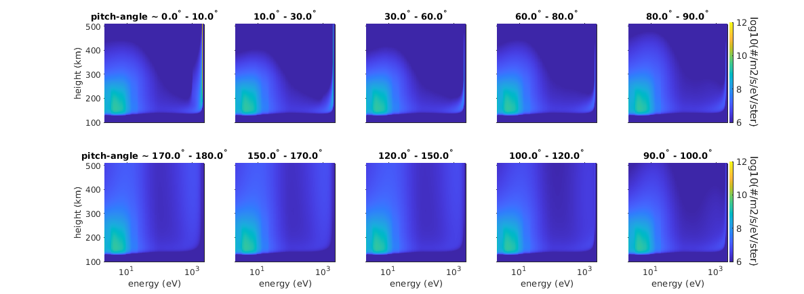 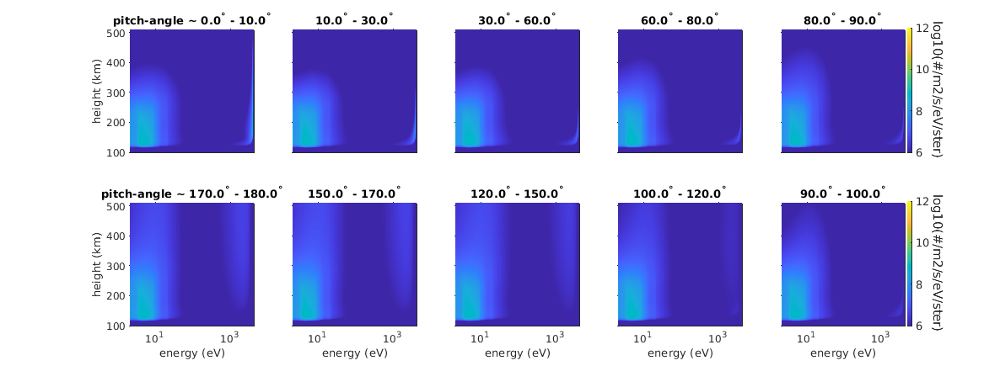 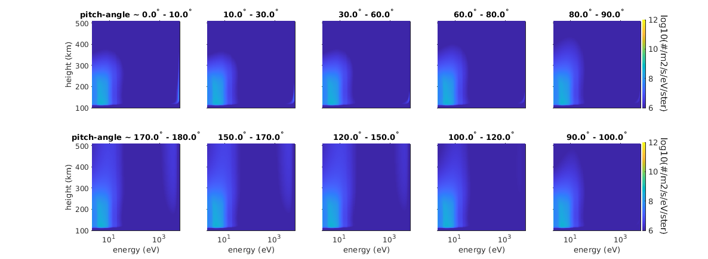 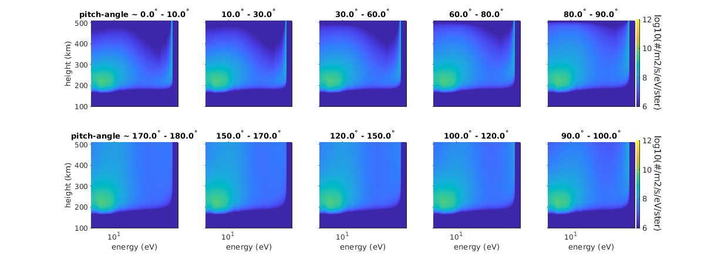 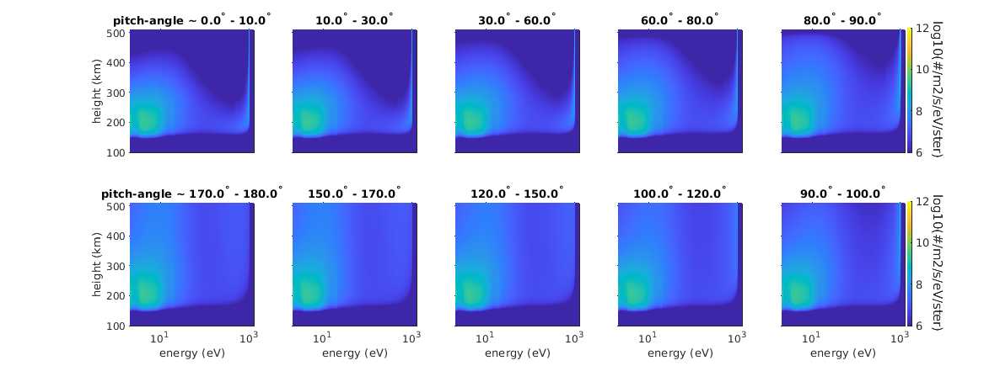 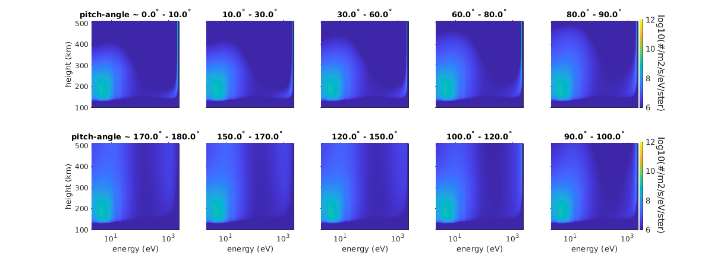 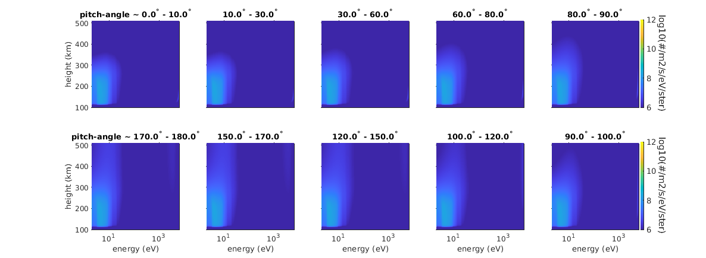 Excitation and ionization-rates
emXS4278 = exc_4278(E); emXS6730 = exc_6730_N2(E); emXS8446_O = exc_8446_O(E); emXS8446_O2 = exc_8446_O2(E); emX7774_O = exc_7774_O(E); emX7774_O2 = exc_7774_O2(E); excXS_O1D = exc_O1D(E); excXS_O1S = exc_O1S(E); dE = diff(E); dE = dE([1:end,end]); XsO = get_all_xs('O',E+dE/2); XsO2 = get_all_xs('O2',E+dE/2); XsN2 = get_all_xs('N2',E+dE/2); load N2_levels.dat load O2_levels.dat load O_levels.dat XsOi = O_levels(:,2)'*XsO; XsO2i = O2_levels(:,2)'*XsO2; XsN2i = N2_levels(:,2)'*XsN2; XsN2A3 = XsN2(13,:); for i1 = numel(Ie_zE_all):-1:1 szIzE = size(Ie_zE_all{i1}); Q4278(:,i1) = exc_z_of_Ie_zE(h_atm,E(1:szIzE(2)),Ie_zE_all{i1},nN2,emXS4278(1:szIzE(2))); Q6730(:,i1) = exc_z_of_Ie_zE(h_atm,E(1:szIzE(2)),Ie_zE_all{i1},nN2,emXS6730(1:szIzE(2))); Q8446(:,i1) = exc_z_of_Ie_zE(h_atm,E(1:szIzE(2)),Ie_zE_all{i1},nO,emXS8446_O(1:szIzE(2))) + ... exc_z_of_Ie_zE(h_atm,E(1:szIzE(2)),Ie_zE_all{i1},nO2,emXS8446_O2(1:szIzE(2))); Q7774(:,i1) = exc_z_of_Ie_zE(h_atm,E(1:szIzE(2)),Ie_zE_all{i1},nO,emX7774_O(1:szIzE(2))) + ... exc_z_of_Ie_zE(h_atm,E(1:szIzE(2)),Ie_zE_all{i1},nO2,emX7774_O2(1:szIzE(2))); Q8446_O(:,i1) = exc_z_of_Ie_zE(h_atm,E(1:szIzE(2)),Ie_zE_all{i1},nO,emXS8446_O(1:szIzE(2))); Q7774_O(:,i1) = exc_z_of_Ie_zE(h_atm,E(1:szIzE(2)),Ie_zE_all{i1},nO,emX7774_O(1:szIzE(2))); Q8446_O2(:,i1) = exc_z_of_Ie_zE(h_atm,E(1:szIzE(2)),Ie_zE_all{i1},nO2,emXS8446_O2(1:szIzE(2))); Q7774_O2(:,i1) = exc_z_of_Ie_zE(h_atm,E(1:szIzE(2)),Ie_zE_all{i1},nO2,emX7774_O2(1:szIzE(2))); QO1D(:,i1) = exc_z_of_Ie_zE(h_atm,E(1:szIzE(2)),Ie_zE_all{i1},nO,excXS_O1D(1:szIzE(2))); QO1S(:,i1) = exc_z_of_Ie_zE(h_atm,E(1:szIzE(2)),Ie_zE_all{i1},nO,excXS_O1S(1:szIzE(2))); QN2i(:,i1) = exc_z_of_Ie_zE(h_atm,E(1:szIzE(2)),Ie_zE_all{i1},nN2,XsN2i(1:szIzE(2))); QO2i(:,i1) = exc_z_of_Ie_zE(h_atm,E(1:szIzE(2)),Ie_zE_all{i1},nO2,XsO2i(1:szIzE(2))); QOi(:,i1) = exc_z_of_Ie_zE(h_atm,E(1:szIzE(2)),Ie_zE_all{i1},nO,XsOi(1:szIzE(2))); QN2A3(:,i1) = exc_z_of_Ie_zE(h_atm,E(1:szIzE(2)),Ie_zE_all{i1},nN2,XsN2A3(1:szIzE(2))); end
figure phB = semilogx(Q7774_O(:,1:5),h_atm/1e3,'linewidth',2); xlabel('excitation rate (/m^3/s)') ylabel('altitude (km)') title('O(3p^5P) electron-O impact excitation rate') axis([10 1e5 100 480]) hold on phnoB = semilogx(Q7774_O(:,6:end),h_atm/1e3,'--','linewidth',2); cmlines(phB) cmlines(phB) cmlines(phnoB) legend([phB(:)',phnoB(:)'],... '0.5 keV F-A',... '1.0 keV F-A',... '2.0 keV F-A',... '4.0 keV F-A',... '6.0 keV F-A',... '0.5 keV iso',... '1.0 keV iso',... '2.0 keV iso',... '4.0 keV iso',... '6.0 keV iso'); [~,iZiso] = max(Q7774_O(:,6:end)); [~,iZB] = max(Q7774_O(:,1:5)); disp([h_atm(iZB)/1e3;h_atm(iZiso)/1e3]) %ans = % 193.18 202.93 236.25 256.64 254.34 227.89 % 190.86 198.23 227.89 254.34 263.9 224.83 figure pcolor(0.5:5.5,h_atm/1e3,log10(Q7774_O(:,1:6))),shading flat,axis([0.5 6.5 100 500]),caxis([-6 0]+max(caxis)) hold on ylabel('height (km)') xlabel('Primary energy (keV)') title('O(3p^5P) electron-O impact excitation rate') set(gca,'xtick',1:5,'xticklabel',{'0.5','1.0','2.0','4.0','6.0'}) phQ = plot(1:5,[h_atm(iZB)'/1e3;h_atm(iZiso)'/1e3],'k.','markersize',18); set(phQ(1),'marker','.') set(phQ(2),'marker','.','color','w') cblh = colorbar_labeled('/m^3/s','log'); set(cblh,'position',get(cblh,'position')+[-0.05 0 0 0])
212.4738 180.1195 149.6738 127.2817 118.6606 223.3560 188.5040 154.6137 129.8302 120.2418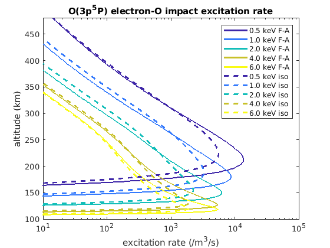 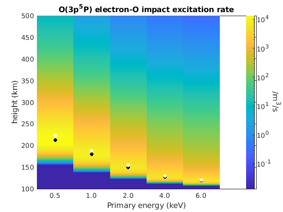
Column emission-rates
Are simply altitude-integration of the volume emission-rates. Here we are going to look at the variation of the intensities in the 7774 Å emissino from atomic oxygen and the 6730 Å emission from molecular nitrogen. * Explain why the ratio between the 6730 and 7774 Å column emission-rates varies with the energy of the energy of the primary electrons.
figure I6730 = trapz(h_atm,Q6730); I7774 = trapz(h_atm,Q7774_O); subplot(2,1,1) ph1 = semilogy([0.5 1 2 4 6],I6730(1:5),'r','linewidth',2); hold on ph2 = semilogy([0.5 1 2 4 6],I6730(6:10),'r--','linewidth',2); ph3 = semilogy([0.5 1 2 4 6],I7774(1:5),'k','linewidth',2); ph4 = semilogy([0.5 1 2 4 6],I7774(6:10),'k--','linewidth',2); ylabel('photons/m^2/s') title('Column emission rates') legend([ph1,ph2,ph3,ph4],... '6730 A f-a',... '6730 A iso',... '7774 A f-a',... '7774 A f-a') subplot(2,1,2) ph1 = semilogy([0.5 1 2 4 6],I6730(1:5)./I7774(1:5),'b','linewidth',2); hold on ph2 = semilogy([0.5 1 2 4 6],I6730(6:10)./I7774(6:10),'b--','linewidth',2); xlabel('Primary-electron energy (keV)') title('Intensity ratios')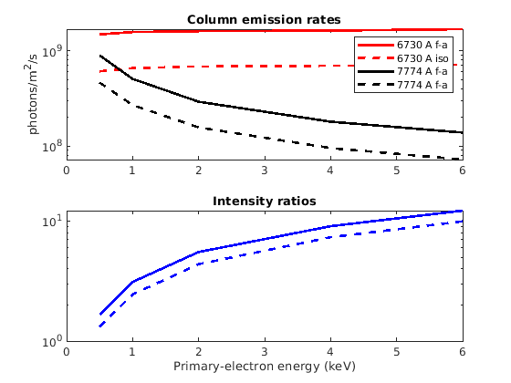